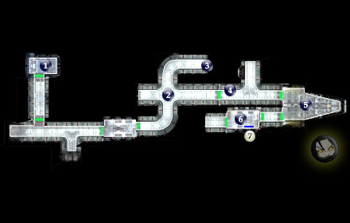
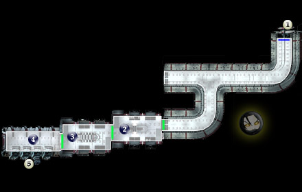

Walkthrough
|
|
|
Star Wars: Knights of the Old Republic is a large game with a lot to do and worlds to explore. This is a walkthrough that comes from many sources, such as, IGN, Game Banshee, and other sources – meaning me and other individuals.
After creating your character and read the beginning monologue, you wake up on the Endar Spire – a Jedi spaceship.
|
| 
|
|
|
1 - Your Quartars
- Wake and meet with Trask Ulgo, who fills you in on everything that is going on.
- Trask JOINS your party
- A basic tutorial
- OPEN up the Footlocker and EQUIP your armor.
- Switch to Trask to OPEN the door.
- Cut scene and a little tutorial on combat
- OPEN the door to find 2 troopers
- GRAB items from the crates and the remains near the entrance.
|
2 - Sith Troopers
- Cut scene. One of troopers lobbs a nade, you try it when you are in range.
|
3 - Parts
- Process to the end of hall
- Parts
- Turn around and back to 2
|
4 - Equipment
- Watch the Dark Jedi and the Jedi kill eachother
- GRAB the cool stuff off their bodies.
|
5 - Bridge
- Before you enter this area, Trask tells you to equip a melee weapon for both of you.
- There are DROPS right of the door and sometimes on the bodies near the cockpit.
|
6 - Escape Pod Access
- After you step in the room, Trask sacifice himself to the Dark Jedi
- Procede to the left the Pod Access
|
| 7 - Exit
Carth comes on and guide to the next area
|
| 
|
|
|
Next Area
- Stealth around the Trooper. Use own judgment to get around him.
- If Stealth ability not avaliable shoot your way through.
|
Espionage
- When, you enter this room, Carth tells you that there are too many Troopers in the next room.
- He tells you that send a computer spike in the room (I like this method a lot... Really Covert)
- Another suggestion, you can fix the droid and send him in.
|
More Sith Troopers
|
Going to TarisNext
|